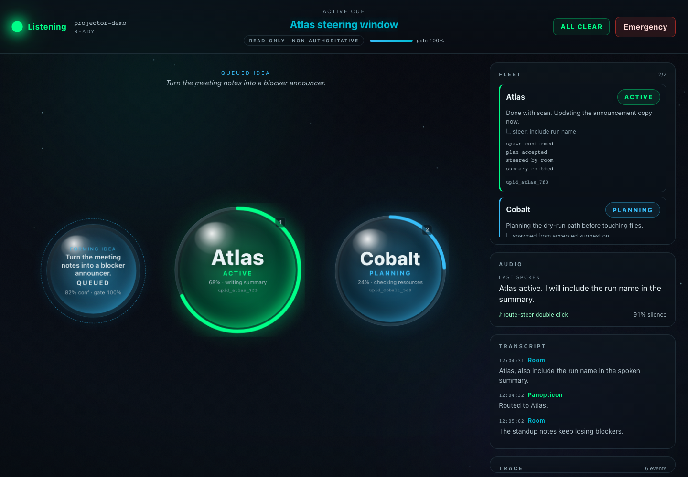
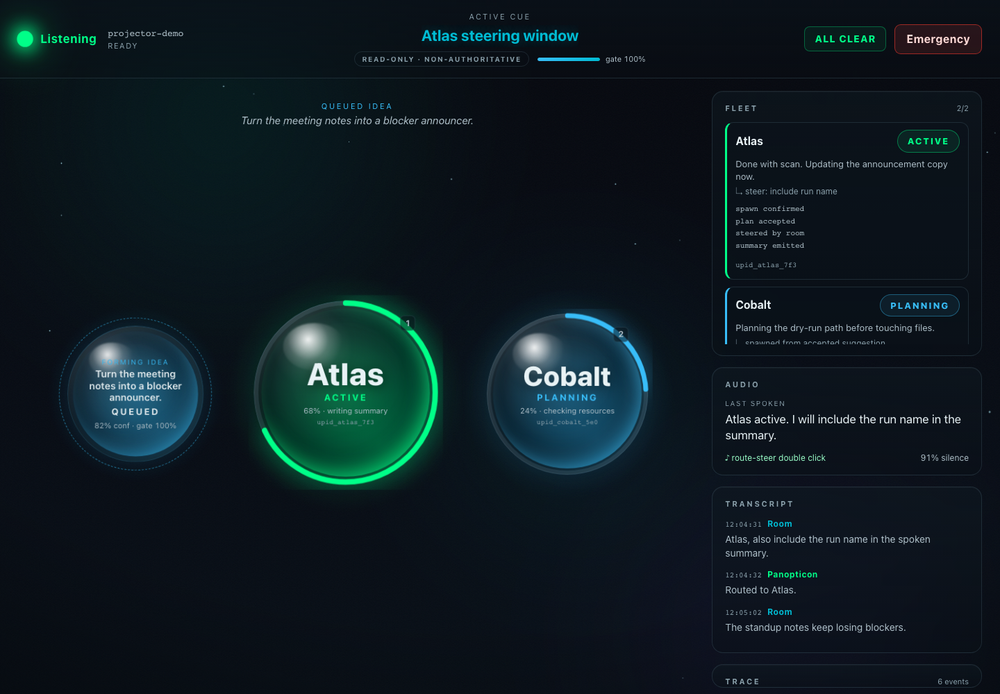
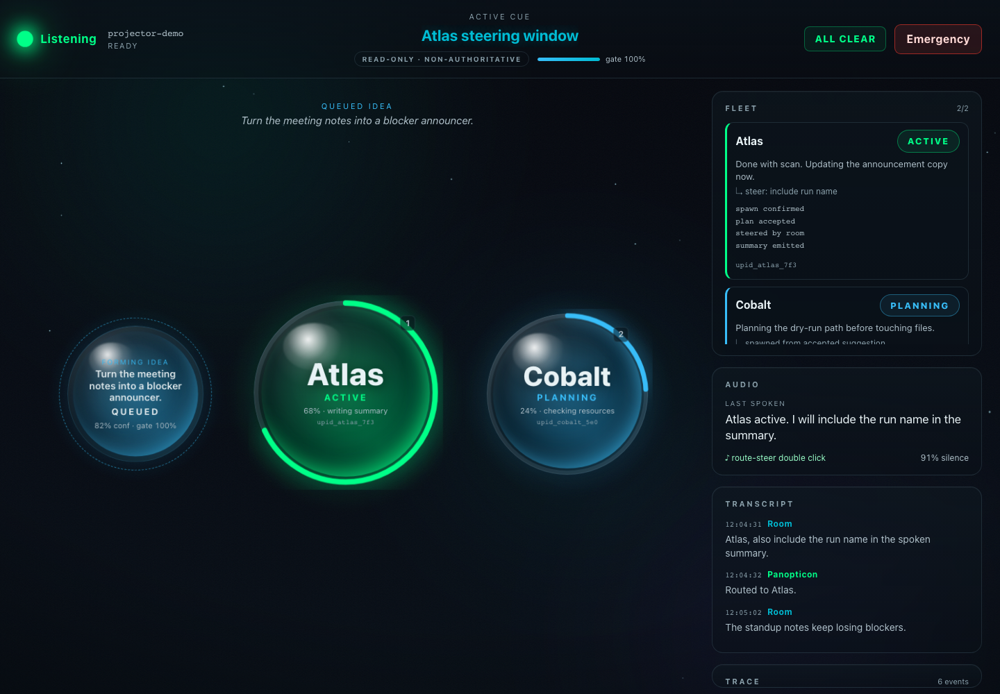

Live build run impl-build-17
Panopticon Build Progress
Current state from git log 8e67319..smithering/integration and live Smithers worktrees.
30Landed
0Building
1Not started
97%Integrated
Building now
- None detectedNo active matching worktree is present.
Feature area
Foundation & spine
5 landed
0 building
0 not started
- LANDED The canonical voice loop (spine) + no-screen harness + degradation test — REQ-5/6/7/8 canonical-spine-and-no-screen-harness Per eng §10 / design §6 / REQ-5 integrate §3–§10 into the canonical spine: wake/magic-word → spoken intent → agent action → spoken confirmation, under ONE `correlationId`
- LANDED Provider interfaces + record-replay/noop doubles (src/providers/) — ENG-T-04 provider-interface-doubles Per eng §2 / ENG-T-04, define the typed provider boundary in `src/providers/`: `ASRProvider` (`stream(audio): AsyncIterable<TranscriptObservation>`), `TTSProvider` (`spea
- LANDED Record-replay harness (src/replay/) — ENG-T-02, the testable seam over ASR+LLM record-replay-harness Build the record-replay harness per eng §15
- LANDED Shared data contract (src/types.ts) — ENG-T-01, defined first shared-types-contract Promote the stub from walking-skeleton-smoke into the full ENG-T-01 contract in `src/types
- LANDED Walking-skeleton smoke slice: Bun/Hono scaffold + CI + the cheapest headless end-to-end test walking-skeleton-smoke Establish the project scaffold (ENG-T-06) and the single cheapest end-to-end slice that becomes the repo smoke test
Feature area
Validation probes
7 landed
0 building
0 not started
- LANDED P-ASR (P0): Deepgram Nova-3 streaming — isFinal, diarization, <200 ms word-final, silence→no-observation, subscription credential probe-asr-deepgram Run P-ASR per eng §17 / design §11
- LANDED P-SEAM (P0): a Cue MappedActionTool action round-trips into a real Smithers run and SSE run-events flow back into Cue; spawn ≤3 s, non-blocking probe-cue-smithers-seam Run P-SEAM per eng §17 / design §11
- LANDED P-CUE (P0 blocker, first third-party build task): real Cue library, policies, two-Program routing, MappedActionTool, TextCue ≤300 ms probe-cue-substrate Run P-CUE per eng §17 / design §11
- LANDED P-LLM + A-LLM-SUB (P0): cheap/fast decision LLM via the host's logged-in subscription — temp-0 determinism, ~100 ms, MappedActionTool schema, no raw key probe-hot-loop-llm-subscription Run P-LLM and A-LLM-SUB per eng §17 / §22 A2
- LANDED P-SMITHERS (P0): durable spawn, streamRunEvents, pause/resume, steer/signal, restart-recovery, concurrent runs, fork realization probe-smithers-durable-runs Run P-SMITHERS per eng §17 / design §11
- LANDED P-TTS (P0): streaming TTS first-byte ≤200 ms (selection benchmark) + pre-cached fixed phrases, no key logged probe-streaming-tts Run P-TTS per eng §17 / design §11
- LANDED Validate-before-build probe harness (poc/) — ENG-T-05 probe-suite-harness Per eng §17 / ENG-T-05, build the `poc/` probe harness that every validate-before-build probe uses: a runner that executes a probe against the REAL third-party API, recor
Feature area
Voice I/O pipeline
2 landed
0 building
0 not started
- LANDED Audio-capture → streaming ASR → Cue WebSocket transcript bridge (ENG-T-10, new scope from §22 A1.3) audio-capture-asr-bridge Build ENG-T-10, the unplanned-but-real scope surfaced by §22 A1
- LANDED Earcons (hot plane) + output policy + timeout 'working' ack (src/audio/) — REQ-2/9/10/12 earcons-and-output-policy Per eng §5 build `src/audio/`
Feature area
Cue layer
4 landed
0 building
0 not started
- LANDED Cue substrate, owned adapter & policies (src/cue/) — REQ-1/3/5/6/7 cue-adapter-and-policies Per eng §3 build `src/cue/` (the ONLY place that imports Cue; build on confirmed primitives only, gated by P-CUE)
- LANDED The Cue↔Smithers seam — async bidirectional dispatcher (src/seam/) — REQ-4/8/13/15 cue-smithers-seam-dispatcher Per eng §9 (bet #3) build `src/seam/` as the ONE owned, async, bidirectional module wiring Cue↔Smithers (gated by P-SEAM + P-SMITHERS)
- LANDED Cheap-LLM intent gate + whole-utterance pre-filter between TextCue and action (§22 A5.1/A5.3) — REQ-3/4/7 intent-gate-semantic-check Implement the CRITICAL §22 A5 amendment: keyword-only `TextCue` matching is INSUFFICIENT to gate spawning/control — round-1 measured 80% context false-positive ('Yes, but
- LANDED Routing & dispatch — invariants in code (src/routing/) — REQ-6/7/8/12 routing-dispatch-invariants Per eng §4 build `src/routing/` — authority lives here, NEVER in the LLM
Feature area
Magic-word steering
2 landed
0 building
0 not started
- LANDED Callsign pool (coined, non-NATO) + Metaphone/phoneme-Levenshtein collision guard (src/routing/callsigns.ts) — REQ-7/13 callsigns-and-collision-guard Per eng §4 (callsigns
- LANDED Steering-window lifecycle (src/routing/steering-window.ts) — REQ-6/8 steering-window-lifecycle Per eng §4 (steering-window
Feature area
Suggestion engine
2 landed
0 building
0 not started
- LANDED Acceptance → spawn flow (src/acceptance/) — REQ-4 acceptance-spawn-flow Per eng §7 (R3) build `src/acceptance/`, the central hands-free spawn path, as its own state owner
- LANDED Conservative ambient suggestion engine (src/suggest/engine.ts) — REQ-3 suggestion-engine Per eng §6 / design §4 build `src/suggest/engine
Feature area
Process Manager & fleet
3 landed
0 building
0 not started
- LANDED Bounded non-voice emergency stop — kill-all + session-end only (src/emergency/stop.ts) — REQ-14 emergency-stop-control Per eng §11 build `src/emergency/stop
- LANDED Two-process fleet + durability/recovery + restraint e2e — REQ-8/13/15/9 fleet-concurrency-and-durability-e2e Per eng §10 / §9 / design §13 close the product-level e2e gates that prove the differentiator and durability
- LANDED Process registry, lifecycle, fleet & pre-spawn resource check (src/process/) — REQ-4/8/12/13/15 process-registry-lifecycle-fleet Per eng §10 build `src/process/`
Feature area
Safety & consent
3 landed
0 building
0 not started
- LANDED Hard-mute fork + unmute via 'unmute' word (Cue) and on-screen button (src/audio/mute-controller.ts) — REQ-2 mute-controller Per eng §5
- LANDED Onboarding, consent scheduler, listening indicator & whole-session raw-audio guard (src/onboarding/) — REQ-1 onboarding-consent-persistence-guard Per eng §12 (R2) build `src/onboarding/`
- LANDED No-raw-key model access (host subscriptions) + fail-closed redaction filter (src/providers/credentials.ts) — ENG-T-09, SEC-1 subscription-credentials-redaction Per eng §2
Feature area
Observability & display board
2 landed
0 building
1 not started
- LANDED Latency benchmark with regression baselines — REQ-10 latency-benchmark-suite Per eng §5/§15
- LANDED TraceProcessor pipeline stage + structured log contract (src/obs/trace.ts) — ENG-T-03 trace-processor-observability Per eng §13 / §15
- NOT STARTED Projector UI + observability — Vite/React shared surface, causal-chain reconstruction, OTel/Langfuse export (src/ui/, src/obs/) — REQ-16 projector-ui-and-observability Per eng §13 complete the observability surface on top of trace-processor-observability
UI capture
panopticon-01-idle-board
UI capture
panopticon-02-idea-bubbles-suggestions

UI capture
panopticon-03-steering-banner

UI capture
panopticon-04-living-process-garden

UI capture
panopticon-90-board-animation